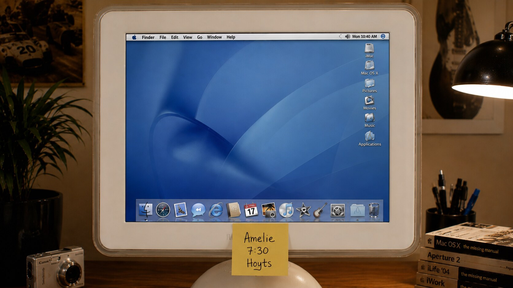

Proyecto de estudio · Escuela Da Vinci · 2004
La función empieza acá — click en la pantalla
Amelie Poulain — Jean-Pierre Jeunet
◀
▶
⟳
http://www.davinci.edu.ar/alumnos/pzarate/amelie/
Done. 55 items.
Amélie — Trailer
← alejarse